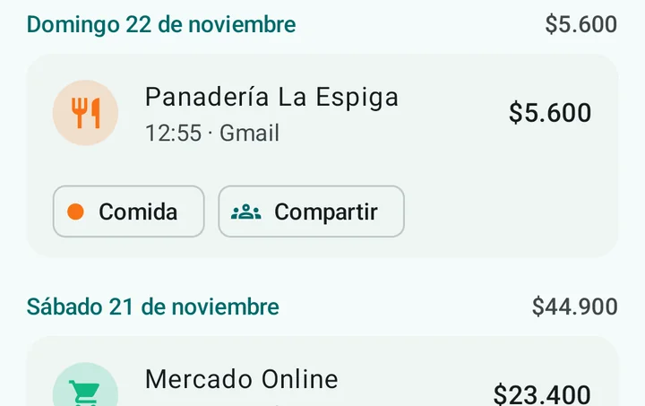

Automático
Cada compra queda registrada sola
FIO lee las notificaciones del banco y los correos de compra, y anota monto, comercio y fecha. ¿Pagaste en efectivo? Lo agregas en segundos, con sugerencias de los comercios que ya conoce.

App de gastos para Android
FIO lee las notificaciones de tu banco y los correos de compra, registra cada gasto y lo clasifica solo. Tú solo revisas.


Capturas reales de la app con datos de ejemplo
Automático
FIO lee las notificaciones del banco y los correos de compra, y anota monto, comercio y fecha. ¿Pagaste en efectivo? Lo agregas en segundos, con sugerencias de los comercios que ya conoce.

Aprende
Categorizas un comercio una vez y FIO lo recuerda. Lo pendiente se agrupa para clasificar varios gastos de un toque.
Planifica
Tus cuentas fijas con aviso antes del vencimiento. Se marcan pagadas solas al llegar el cobro.
Divide
Partes iguales, por monto o por porcentaje. La otra persona recibe un enlace y su FIO lo registra.
Ordenado
Si la tienda, el medio de pago y el banco avisan la misma compra, cuenta una sola vez.
Entiende
Total del mes comparado con el anterior, gasto por categoría, tendencia de seis meses y los comercios donde más gastas.
A tu gusto
Los colores de tu fondo de pantalla o temas conocidos.
FIO solo procesa los avisos de bancos y correos de compra. El resto lo ignora.
Cada aviso de compra se convierte en un gasto con su monto, comercio y fecha. Los duplicados se descartan.
Clasifica los pendientes y mira en Estadísticas en qué se te fue la plata.
Tus gastos dicen mucho de ti. Por eso FIO no los envía a ninguna parte.

Gratis, para Android 8.0 o superior · 16 MB
¿Tienes la 1.0? La 1.1 se instala como app nueva. En la 1.0 haz un respaldo (Ajustes → Datos → Respaldar datos), restáuralo en la 1.1 y luego desinstala la 1.0.
SHA-256 del APK:0ec4922e21980d0b74e6a7c4e53fdcfe1d3f148d7fb5c041878bb70c6bf71714
Certificado de firma (SHA-256):73:63:38:FA:D4:E8:BC:8F:88:49:0A:5C:F1:DF:B4:34:31:7E:0E:1A:B8:29:46:43:6E:CC:0C:54:9B:94:61:7E